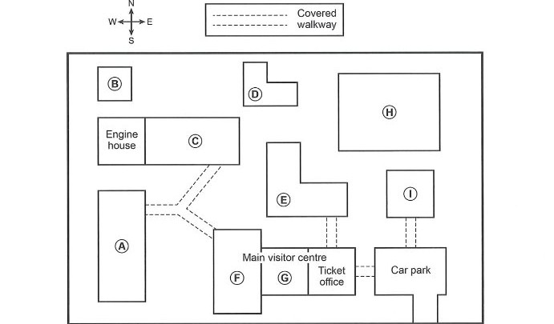

IELTS ACADEMIC LISTENING
Part 2
Questions 11–20
Time Remaining
30:00
Listening Audio
Listen carefully and answer Questions 11–20. The audio can only be played once.
Questions 11–12
Choose TWO letters, A–E.
Which TWO pieces of advice are given about the Marsden Coastal Walk?
11–12
Questions 13–14
Choose TWO letters, A–E.
Which TWO things are said about the Melby Heritage Walk?
13–14
Questions 15–20
Label the map below.
Write the correct letter, A–I, next to Questions 15–20.

15. Exhibition
16. Baths
17. Tools
18. Vehicles
19. Ponies
20. Education centre